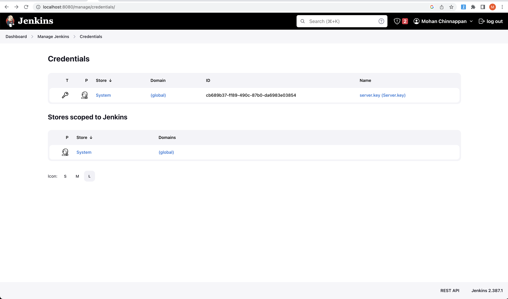

Jenkins
The best part is no part.
Physics is the law and everything else is a recommendation.
The machine that makes the machine!
- Elon Musk
Topics
Use Case
- Setup Jenkins Master and Worker Nodes to run SFDX for the given org
- Make use of JWT flow to login to a Salesforce org
graph TB; JenkinsMaster-->socat; socat--> Worker1-->ORG; socat--> Worker2-->ORG; socat--> Worker3-->ORG;
Setting up Jenkins Master
docker network create jenkins
37d113c8d79cd12a209822f0ccb12be7058b9c6ccdc62e2b298725537edd703d
docker network ls
NETWORK ID NAME DRIVER SCOPE
f8ca68549edb bridge bridge local
145498352d20 host host local
37d113c8d79c jenkins bridge local
3bdfaf921867 none null local
docker run --name jenkins-docker --rm --detach \
--privileged --network jenkins --network-alias docker \
--env DOCKER_TLS_CERTDIR=/certs \
--volume jenkins-docker-certs:/certs/client \
--volume jenkins-data:/var/jenkins_home \
--publish 2376:2376 \
docker:dind --storage-driver overlay2
Unable to find image 'docker:dind' locally
dind: Pulling from library/docker
63b65145d645: Pull complete
67fecbccebe0: Pull complete
2b3fda0e4f2a: Pull complete
30dc96e58339: Pull complete
8c007c9e333b: Pull complete
c31b9f3137a1: Pull complete
782206789a08: Pull complete
e415889ffe25: Pull complete
55134767123a: Pull complete
36af3abb7351: Pull complete
9e414f2e72f2: Pull complete
4ccabe0725ae: Pull complete
ca215d26ccb7: Pull complete
Digest: sha256:e4d776dd1e0580dfb670559d887300aa08b53b8a59f5df2d4eaace936ef4d0e9
Status: Downloaded newer image for docker:dind
58b1537f513652de9951efd03766a2c9ad853e45341a18584f39565bb4beae14
cat Dockerfile
FROM jenkins/jenkins:2.387.1
USER root
RUN apt-get update && apt-get install -y lsb-release
RUN curl -fsSLo /usr/share/keyrings/docker-archive-keyring.asc \
https://download.docker.com/linux/debian/gpg
RUN echo "deb [arch=$(dpkg --print-architecture) \
signed-by=/usr/share/keyrings/docker-archive-keyring.asc] \
https://download.docker.com/linux/debian \
$(lsb_release -cs) stable" > /etc/apt/sources.list.d/docker.list
RUN apt-get update && apt-get install -y docker-ce-cli
USER jenkins
RUN jenkins-plugin-cli --plugins "blueocean docker-workflow"
docker build -t myjenkins-blueocean:2.387.1-1 .
[+] Building 42.9s (10/10) FINISHED
=> [internal] load build definition from Dockerfile 0.0s
=> => transferring dockerfile: 602B 0.0s
=> [internal] load .dockerignore 0.0s
=> => transferring context: 2B 0.0s
=> [internal] load metadata for docker.io/jenkins/jenkins:2.387.1 1.0s
=> [1/6] FROM docker.io/jenkins/jenkins:2.387.1@sha256:0944e18261a6547e89b700cec432949281a7419a6165a3906e78c97efde3bc86 11.1s
=> => resolve docker.io/jenkins/jenkins:2.387.1@sha256:0944e18261a6547e89b700cec432949281a7419a6165a3906e78c97efde3bc86 0.0s
=> => sha256:a56533012712c1db623da3e5e9c2d0276301c82db0a2e7a82debfb57e5d916f2 8.93MB / 8.93MB 0.3s
=> => sha256:c09d5e9e1188f3fff7a4f8c3c7c330fde5184cba1c6f0c92526b8b7bd0ac7c26 51.63MB / 51.63MB 3.4s
=> => sha256:0944e18261a6547e89b700cec432949281a7419a6165a3906e78c97efde3bc86 2.36kB / 2.36kB 0.0s
=> => sha256:32fb02163b6bb519a30f909008e852354dae10bdfd6b34190dbdfe8f15403ea0 55.05MB / 55.05MB 2.6s
=> => sha256:005fcb5c3017ef120d0d9d8d8925e9248ff6e2cf2b5e18b527b01459c7b2b3f4 2.77kB / 2.77kB 0.0s
=> => sha256:d5ed2ceef0ec08e9044ebb39812f211d64dbcdfce775cc6b0460ca289193416f 13.13kB / 13.13kB 0.0s
=> => sha256:7936e107ffe73b406a0d02edf9bb02b983534d803bb06fd03dc38dac4b6cfe2a 1.24kB / 1.24kB 0.4s
=> => sha256:3ca683058265b99b65bbc69b9e8fa4c46e830db35aad614706200e6cf0c30d8a 189B / 189B 0.5s
=> => sha256:c2ecd304b4b84ef6154bd85e13360f0b015e39057a329698617ce0a53ed6cf32 98.12MB / 98.12MB 4.7s
=> => extracting sha256:32fb02163b6bb519a30f909008e852354dae10bdfd6b34190dbdfe8f15403ea0 2.4s
=> => sha256:be3512d810d65f00f28af0885e2f30833263ee061528e20c7fee21664f1572b8 202B / 202B 2.8s
=> => sha256:56b37d7c2a7a3c93fd013cb1ad5652f8cea3910ecc0274d73064bba27ab57864 5.84MB / 5.84MB 3.4s
=> => sha256:99ed1e723e52507ce2d615e1682d673c3ffcec5f5b68c266db70d829ef4be208 76.93MB / 76.93MB 5.8s
=> => sha256:256db5485b1399ecbd58c2558388fc9a4ff1caaaeacbdfe23127c7f13b1ee98b 1.93kB / 1.93kB 3.5s
=> => sha256:ee8c7eaf5e6bd8c45e503756da48e80137def6765017148ce9f2af66ce97244b 1.17kB / 1.17kB 3.7s
=> => sha256:509f66c2f3174642f0eb3e3b2e8a70da698f613042ec65f525c476afe0b6b7d5 374B / 374B 3.9s
=> => sha256:820296a845d636be13276fdf3bdae7fdf2ac00d401182632d1ab450e26353674 271B / 271B 4.1s
=> => extracting sha256:c09d5e9e1188f3fff7a4f8c3c7c330fde5184cba1c6f0c92526b8b7bd0ac7c26 2.0s
=> => extracting sha256:a56533012712c1db623da3e5e9c2d0276301c82db0a2e7a82debfb57e5d916f2 0.2s
=> => extracting sha256:7936e107ffe73b406a0d02edf9bb02b983534d803bb06fd03dc38dac4b6cfe2a 0.0s
=> => extracting sha256:3ca683058265b99b65bbc69b9e8fa4c46e830db35aad614706200e6cf0c30d8a 0.0s
=> => extracting sha256:c2ecd304b4b84ef6154bd85e13360f0b015e39057a329698617ce0a53ed6cf32 0.6s
=> => extracting sha256:be3512d810d65f00f28af0885e2f30833263ee061528e20c7fee21664f1572b8 0.0s
=> => extracting sha256:56b37d7c2a7a3c93fd013cb1ad5652f8cea3910ecc0274d73064bba27ab57864 0.1s
=> => extracting sha256:99ed1e723e52507ce2d615e1682d673c3ffcec5f5b68c266db70d829ef4be208 1.6s
=> => extracting sha256:256db5485b1399ecbd58c2558388fc9a4ff1caaaeacbdfe23127c7f13b1ee98b 0.0s
=> => extracting sha256:ee8c7eaf5e6bd8c45e503756da48e80137def6765017148ce9f2af66ce97244b 0.0s
=> => extracting sha256:509f66c2f3174642f0eb3e3b2e8a70da698f613042ec65f525c476afe0b6b7d5 0.0s
=> => extracting sha256:820296a845d636be13276fdf3bdae7fdf2ac00d401182632d1ab450e26353674 0.0s
=> [2/6] RUN apt-get update && apt-get install -y lsb-release 6.7s
=> [3/6] RUN curl -fsSLo /usr/share/keyrings/docker-archive-keyring.asc https://download.docker.com/linux/debian/gpg 0.7s
=> [4/6] RUN echo "deb [arch=$(dpkg --print-architecture) signed-by=/usr/share/keyrings/docker-archive-keyring.asc] https://download.docker 0.2s
=> [5/6] RUN apt-get update && apt-get install -y docker-ce-cli 8.9s
=> [6/6] RUN jenkins-plugin-cli --plugins "blueocean docker-workflow" 13.5s
=> exporting to image 0.8s
=> => exporting layers 0.8s
=> => writing image sha256:fd428091db2d8149ed7ce13d7fe3ccd7d412e87a121f4a6850ec0cfd0ed91ce2 0.0s
=> => naming to docker.io/library/myjenkins-blueocean:2.387.1-1 0.0s
Use 'docker scan' to run Snyk tests against images to find vulnerabilities and learn how to fix them
docker container ls
CONTAINER ID IMAGE COMMAND CREATED STATUS PORTS NAMES
58b1537f5136 docker:dind "dockerd-entrypoint.…" 2 minutes ago Up 2 minutes 2375/tcp, 0.0.0.0:2376->2376/tcp jenkins-docker
docker run --name jenkins-blueocean --restart=on-failure --detach \
--network jenkins --env DOCKER_HOST=tcp://docker:2376 \
--env DOCKER_CERT_PATH=/certs/client --env DOCKER_TLS_VERIFY=1 \
--publish 8080:8080 --publish 50000:50000 \
--volume jenkins-data:/var/jenkins_home \
--volume jenkins-docker-certs:/certs/client:ro \
myjenkins-blueocean:2.387.1-1
docker ps
CONTAINER ID IMAGE COMMAND CREATED STATUS PORTS NAMES
c5ea234eee86 myjenkins-blueocean:2.387.1-1 "/usr/bin/tini -- /u…" 2 minutes ago Up 2 minutes 0.0.0.0:8080->8080/tcp, 0.0.0.0:50000->50000/tcp jenkins-blueocean
58b1537f5136 docker:dind "dockerd-entrypoint.…" 4 minutes ago Up 4 minutes 2375/tcp, 0.0.0.0:2376->2376/tcp jenkins-docker
Getting initialAdminPassword
docker exec c5ea234eee86 cat /var/jenkins_home/secrets/initialAdminPassword
600755197d9642a08d03aa294fb82344
bash into docker container
docker exec -it c5ea234eee86 bash
jenkins@c5ea234eee86:~$ ls -l
total 112
-rw-r--r-- 1 jenkins jenkins 1663 Mar 12 13:29 config.xml
-rw-r--r-- 1 jenkins jenkins 5316 Mar 12 13:28 copy_reference_file.log
-rw-r--r-- 1 jenkins jenkins 156 Mar 12 13:28 hudson.model.UpdateCenter.xml
-rw-r--r-- 1 jenkins jenkins 370 Mar 12 13:28 hudson.plugins.git.GitTool.xml
-rw------- 1 jenkins jenkins 1680 Mar 12 13:28 identity.key.enc
-rw-r--r-- 1 jenkins jenkins 7 Mar 12 13:34 jenkins.install.InstallUtil.lastExecVersion
-rw-r--r-- 1 jenkins jenkins 7 Mar 12 13:34 jenkins.install.UpgradeWizard.state
-rw-r--r-- 1 jenkins jenkins 179 Mar 12 13:34 jenkins.model.JenkinsLocationConfiguration.xml
-rw-r--r-- 1 jenkins jenkins 171 Mar 12 13:28 jenkins.telemetry.Correlator.xml
drwxr-xr-x 3 jenkins jenkins 4096 Mar 12 13:51 jobs
drwxr-xr-x 4 jenkins jenkins 4096 Mar 12 14:33 logs
-rw-r--r-- 1 jenkins jenkins 907 Mar 12 13:28 nodeMonitors.xml
drwxr-xr-x 2 jenkins jenkins 4096 Mar 12 13:28 nodes
drwxr-xr-x 114 jenkins jenkins 24576 Mar 12 13:33 plugins
-rw-r--r-- 1 jenkins jenkins 129 Mar 12 13:54 queue.xml
-rw-r--r-- 1 jenkins jenkins 64 Mar 12 13:28 secret.key
-rw-r--r-- 1 jenkins jenkins 0 Mar 12 13:28 secret.key.not-so-secret
drwx------ 2 jenkins jenkins 4096 Mar 12 13:53 secrets
drwxr-xr-x 2 jenkins jenkins 4096 Mar 12 13:33 updates
drwxr-xr-x 2 jenkins jenkins 4096 Mar 12 13:28 userContent
drwxr-xr-x 3 jenkins jenkins 4096 Mar 12 13:33 users
drwxr-xr-x 11 jenkins jenkins 4096 Mar 12 13:28 war
drwxr-xr-x 3 jenkins jenkins 4096 Mar 12 13:53 workspace
jenkins@c5ea234eee86:~$ pwd
/var/jenkins_home
jenkins@c5ea234eee86:~$ python3
Python 3.9.2 (default, Feb 28 2021, 17:03:44)
[GCC 10.2.1 20210110] on linux
Type "help", "copyright", "credits" or "license" for more information.
>>> exit()
socat container
-
socat provides proxy the connection between Jenkins master container and localhost
-
Steps
-
If you are running jenkins as container, in the docker host uri field you have to enter unix or tcp address of the docker host. But since you are running jenkins as container, the container can't reach docker host unix port
-
So we have to run another container that can mediate between docker host and jenkins container. It will publish docker host's unix port as its tcp port. Follow the instructions to create socat container https://hub.docker.com/r/alpine/socat/
3)After the creating socat container, you can go back the docker configuration in jenkins and enter tcp://socat-container-ip:2375
- Test Connection should succeed now
docker run -d --restart=always -p 127.0.0.1:2400:2375 --network jenkins -v /var/run/docker.sock:/var/run/docker.sock alpine/socat tcp-listen:2375,fork,reuseaddr unix-connect:/var/run/docker.sock
b643f2a82b31e1f2ac9e5261badbb65d13447b94a92eaa0bb34202a9148f39b4
docker container ls
CONTAINER ID IMAGE COMMAND CREATED STATUS PORTS NAMES
b643f2a82b31 alpine/socat "socat tcp-listen:23…" About a minute ago Up About a minute 127.0.0.1:2400->2375/tcp silly_hopper
c5ea234eee86 myjenkins-blueocean:2.387.1-1 "/usr/bin/tini -- /u…" 3 hours ago Up 12 minutes 0.0.0.0:8080->8080/tcp, 0.0.0.0:50000->50000/tcp jenkins-blueocean
58b1537f5136 docker:dind "dockerd-entrypoint.…" 3 hours ago Up 3 hours 2375/tcp, 0.0.0.0:2376->2376/tcp jenkins-docker
docker inspect b643f2a82b31e1f2ac9e5261badbb65d13447b94a92eaa0bb34202a9148f39b4 | grep IPAddress
"SecondaryIPAddresses": null,
"IPAddress": "",
"IPAddress": "172.18.0.4",
docker ps
CONTAINER ID IMAGE COMMAND CREATED STATUS PORTS NAMES
b643f2a82b31 alpine/socat "socat tcp-listen:23…" 2 minutes ago Up 2 minutes 127.0.0.1:2400->2375/tcp silly_hopper
c5ea234eee86 myjenkins-blueocean:2.387.1-1 "/usr/bin/tini -- /u…" 3 hours ago Up 13 minutes 0.0.0.0:8080->8080/tcp, 0.0.0.0:50000->50000/tcp jenkins-blueocean
58b1537f5136 docker:dind "dockerd-entrypoint.…" 3 hours ago Up 3 hours 2375/tcp, 0.0.0.0:2376->2376/tcp jenkins-docker
Inspect socat
docker inspect silly_hopper
[
{
"Id": "b643f2a82b31e1f2ac9e5261badbb65d13447b94a92eaa0bb34202a9148f39b4",
"Created": "2023-03-12T16:08:27.933374909Z",
"Path": "socat",
"Args": [
"tcp-listen:2375,fork,reuseaddr",
"unix-connect:/var/run/docker.sock"
],
"State": {
"Status": "running",
"Running": true,
"Paused": false,
"Restarting": false,
"OOMKilled": false,
"Dead": false,
"Pid": 8609,
"ExitCode": 0,
"Error": "",
"StartedAt": "2023-03-12T16:08:28.362760818Z",
"FinishedAt": "0001-01-01T00:00:00Z"
},
"Image": "sha256:f0bbf8a4f6a0e25e06fe69c284e6e0494948e8de21ef933d72732b7858da3110",
"ResolvConfPath": "/var/lib/docker/containers/b643f2a82b31e1f2ac9e5261badbb65d13447b94a92eaa0bb34202a9148f39b4/resolv.conf",
"HostnamePath": "/var/lib/docker/containers/b643f2a82b31e1f2ac9e5261badbb65d13447b94a92eaa0bb34202a9148f39b4/hostname",
"HostsPath": "/var/lib/docker/containers/b643f2a82b31e1f2ac9e5261badbb65d13447b94a92eaa0bb34202a9148f39b4/hosts",
"LogPath": "/var/lib/docker/containers/b643f2a82b31e1f2ac9e5261badbb65d13447b94a92eaa0bb34202a9148f39b4/b643f2a82b31e1f2ac9e5261badbb65d13447b94a92eaa0bb34202a9148f39b4-json.log",
"Name": "/silly_hopper",
"RestartCount": 0,
"Driver": "overlay2",
"Platform": "linux",
"MountLabel": "",
"ProcessLabel": "",
"AppArmorProfile": "",
"ExecIDs": null,
"HostConfig": {
"Binds": [
"/var/run/docker.sock:/var/run/docker.sock"
],
"ContainerIDFile": "",
"LogConfig": {
"Type": "json-file",
"Config": {}
},
"NetworkMode": "jenkins",
"PortBindings": {
"2375/tcp": [
{
"HostIp": "127.0.0.1",
"HostPort": "2400"
}
]
},
"RestartPolicy": {
"Name": "always",
"MaximumRetryCount": 0
},
"AutoRemove": false,
"VolumeDriver": "",
"VolumesFrom": null,
"CapAdd": null,
"CapDrop": null,
"CgroupnsMode": "private",
"Dns": [],
"DnsOptions": [],
"DnsSearch": [],
"ExtraHosts": null,
"GroupAdd": null,
"IpcMode": "private",
"Cgroup": "",
"Links": null,
"OomScoreAdj": 0,
"PidMode": "",
"Privileged": false,
"PublishAllPorts": false,
"ReadonlyRootfs": false,
"SecurityOpt": null,
"UTSMode": "",
"UsernsMode": "",
"ShmSize": 67108864,
"Runtime": "runc",
"ConsoleSize": [
0,
0
],
"Isolation": "",
"CpuShares": 0,
"Memory": 0,
"NanoCpus": 0,
"CgroupParent": "",
"BlkioWeight": 0,
"BlkioWeightDevice": [],
"BlkioDeviceReadBps": null,
"BlkioDeviceWriteBps": null,
"BlkioDeviceReadIOps": null,
"BlkioDeviceWriteIOps": null,
"CpuPeriod": 0,
"CpuQuota": 0,
"CpuRealtimePeriod": 0,
"CpuRealtimeRuntime": 0,
"CpusetCpus": "",
"CpusetMems": "",
"Devices": [],
"DeviceCgroupRules": null,
"DeviceRequests": null,
"KernelMemory": 0,
"KernelMemoryTCP": 0,
"MemoryReservation": 0,
"MemorySwap": 0,
"MemorySwappiness": null,
"OomKillDisable": null,
"PidsLimit": null,
"Ulimits": null,
"CpuCount": 0,
"CpuPercent": 0,
"IOMaximumIOps": 0,
"IOMaximumBandwidth": 0,
"MaskedPaths": [
"/proc/asound",
"/proc/acpi",
"/proc/kcore",
"/proc/keys",
"/proc/latency_stats",
"/proc/timer_list",
"/proc/timer_stats",
"/proc/sched_debug",
"/proc/scsi",
"/sys/firmware"
],
"ReadonlyPaths": [
"/proc/bus",
"/proc/fs",
"/proc/irq",
"/proc/sys",
"/proc/sysrq-trigger"
]
},
"GraphDriver": {
"Data": {
"LowerDir": "/var/lib/docker/overlay2/ac59c4bb642c204d52676ea5a3f38ab123aa55c28e7c4d32885c29798685bf6c-init/diff:/var/lib/docker/overlay2/33c335c0d0c0267bc8a0de4b181fa6a67212ef993d5b23cc2d932eccd87da979/diff:/var/lib/docker/overlay2/0b76f458f2092bfa7d73629e242e320299fb159448bf52a18647959f1637387c/diff",
"MergedDir": "/var/lib/docker/overlay2/ac59c4bb642c204d52676ea5a3f38ab123aa55c28e7c4d32885c29798685bf6c/merged",
"UpperDir": "/var/lib/docker/overlay2/ac59c4bb642c204d52676ea5a3f38ab123aa55c28e7c4d32885c29798685bf6c/diff",
"WorkDir": "/var/lib/docker/overlay2/ac59c4bb642c204d52676ea5a3f38ab123aa55c28e7c4d32885c29798685bf6c/work"
},
"Name": "overlay2"
},
"Mounts": [
{
"Type": "bind",
"Source": "/var/run/docker.sock",
"Destination": "/var/run/docker.sock",
"Mode": "",
"RW": true,
"Propagation": "rprivate"
}
],
"Config": {
"Hostname": "b643f2a82b31",
"Domainname": "",
"User": "",
"AttachStdin": false,
"AttachStdout": false,
"AttachStderr": false,
"ExposedPorts": {
"2375/tcp": {}
},
"Tty": false,
"OpenStdin": false,
"StdinOnce": false,
"Env": [
"PATH=/usr/local/sbin:/usr/local/bin:/usr/sbin:/usr/bin:/sbin:/bin"
],
"Cmd": [
"tcp-listen:2375,fork,reuseaddr",
"unix-connect:/var/run/docker.sock"
],
"Image": "alpine/socat",
"Volumes": null,
"WorkingDir": "",
"Entrypoint": [
"socat"
],
"OnBuild": null,
"Labels": {}
},
"NetworkSettings": {
"Bridge": "",
"SandboxID": "a818d2616cbaced18798c777a02b95d53c16765842f392151d39272ed0e4be37",
"HairpinMode": false,
"LinkLocalIPv6Address": "",
"LinkLocalIPv6PrefixLen": 0,
"Ports": {
"2375/tcp": [
{
"HostIp": "127.0.0.1",
"HostPort": "2400"
}
]
},
"SandboxKey": "/var/run/docker/netns/a818d2616cba",
"SecondaryIPAddresses": null,
"SecondaryIPv6Addresses": null,
"EndpointID": "",
"Gateway": "",
"GlobalIPv6Address": "",
"GlobalIPv6PrefixLen": 0,
"IPAddress": "",
"IPPrefixLen": 0,
"IPv6Gateway": "",
"MacAddress": "",
"Networks": {
"jenkins": {
"IPAMConfig": null,
"Links": null,
"Aliases": [
"b643f2a82b31"
],
"NetworkID": "37d113c8d79cd12a209822f0ccb12be7058b9c6ccdc62e2b298725537edd703d",
"EndpointID": "08bc7021dd48b6993f51b08a0d0e9333276c64311b4487361b02c476a3a1e3f9",
"Gateway": "172.18.0.1",
"IPAddress": "172.18.0.4",
"IPPrefixLen": 16,
"IPv6Gateway": "",
"GlobalIPv6Address": "",
"GlobalIPv6PrefixLen": 0,
"MacAddress": "02:42:ac:12:00:04",
"DriverOpts": null
}
}
}
}
]
Worker node setup
Build Docker image
cat Dockerfile
FROM jenkins/agent:alpine-jdk11
# author: mchinnappan
USER root
# install python3
RUN apk add python3
RUN apk add py3-pip
# install vim
RUN apk add vim
# install nodejs and sfdx cli
RUN apk add nodejs
RUN apk add npm
RUN apk add yarn
ARG SALESFORCE_CLI_VERSION=latest
RUN npm install --global sfdx-cli@${SALESFORCE_CLI_VERSION}
RUN apk add jq
USER jenkins
# install required plugins
RUN echo 'y' | sfdx plugins:install sfdx-mohanc-plugins
RUN echo 'y' | sfdx plugins:install sfdx-git-delta
docker build -t docker-agent-sfdx .
[+] Building 160.6s (15/15) FINISHED
=> [internal] load build definition from Dockerfile 0.0s
=> => transferring dockerfile: 557B 0.0s
=> [internal] load .dockerignore 0.0s
=> => transferring context: 2B 0.0s
=> [internal] load metadata for docker.io/jenkins/agent:alpine-jdk11 0.9s
=> [ 1/11] FROM docker.io/jenkins/agent:alpine-jdk11@sha256:fdf4d5e79b3645be5779130bf3239cf9344b5b1929d538b7d2980be8868550f6 0.0s
=> CACHED [ 2/11] RUN apk add python3 0.0s
=> CACHED [ 3/11] RUN apk add py3-pip 0.0s
=> [ 4/11] RUN apk add vim 1.4s
=> [ 5/11] RUN apk add nodejs 1.3s
=> [ 6/11] RUN apk add npm 1.0s
=> [ 7/11] RUN apk add yarn 0.8s
=> [ 8/11] RUN npm install --global sfdx-cli@latest 30.6s
=> [ 9/11] RUN apk add jq 0.9s
=> [10/11] RUN echo 'y' | sfdx plugins:install sfdx-mohanc-plugins 63.6s
=> [11/11] RUN echo 'y' | sfdx plugins:install sfdx-git-delta 38.8s
=> exporting to image 21.2s
=> => exporting layers 21.1s
=> => writing image sha256:5d988bfa62b447ffe80a0421417b9f6329656f4d78722ea65969d32cdc13b5d4 0.0s
=> => naming to docker.io/library/docker-agent-sfdx
run the image
docker run -it --entrypoint bash --name docker-agent-sfdx-app docker-agent-sfdx
17ded65a422c:~$ sfdx plugins
sfdx-git-delta 5.13.3
sfdx-mohanc-plugins 0.0.343
exit
Publish this image : 5d988bfa62b447ffe80a0421417b9f6329656f4d78722ea65969d32cdc13b5d4
docker tag 5d988bfa62b447ffe80a0421417b9f6329656f4d78722ea65969d32cdc13b5d4 mohanchinnappan/mc-sfdx
docker images
REPOSITORY TAG IMAGE ID CREATED SIZE
mohanchinnappan/mc-sfdx latest 5d988bfa62b4 24 minutes ago 1.51GB
myjenkins-blueocean 2.387.1-1 fd428091db2d 4 hours ago 805MB
docker dind c365741dcfc2 4 days ago 311MB
alpine/socat latest f0bbf8a4f6a0 2 weeks ago 8.5MB
Push
docker push mohanchinnappan/mc-sfdx
Using default tag: latest
The push refers to repository [docker.io/mohanchinnappan/mc-sfdx]
3c3548e6efa9: Pushed
c991a1b7df1a: Pushed
018486e93789: Pushed
96d7750030cc: Pushed
17ec9d53bd65: Pushed
cc4f6cce9ed0: Pushed
e5fc35b10359: Pushed
26cde4efb06b: Pushed
a91d2cf08b0f: Pushed
0970af15e418: Pushed
5f70bf18a086: Mounted from mohanchinnappan/jupyter-rust
639d13e0e024: Mounted from jenkins/agent
b910852e976b: Mounted from jenkins/agent
bc4c636cd02f: Mounted from jenkins/agent
99b5df13238c: Mounted from jenkins/agent
10009e9661e3: Mounted from jenkins/agent
abc8eda4da3a: Mounted from jenkins/agent
591e5beaaae8: Mounted from jenkins/agent
a34e3a797aad: Mounted from jenkins/agent
7cd52847ad77: Mounted from jenkins/agent
latest: digest: sha256:cf4b1d93c8833298cec8fa5897d22ede339b53193a606c69448ac8ee76a0c90b size: 4532
Published Docker Image
Run it
docker run -it --entrypoint bash mohanchinnappan/mc-sfdx
9900abaf79d2:~$ sfdx plugins
sfdx-git-delta 5.13.3
sfdx-mohanc-plugins 0.0.343
python3
Python 3.10.10 (main, Feb 9 2023, 02:08:14) [GCC 12.2.1 20220924] on linux
Type "help", "copyright", "credits" or "license" for more information.
>>> exit()
9900abaf79d2:~$ pwd
/home/jenkins
9900abaf79d2:~$ vim
9900abaf79d2:~$ java --version
openjdk 11.0.18 2023-01-17
OpenJDK Runtime Environment Temurin-11.0.18+10 (build 11.0.18+10)
OpenJDK 64-Bit Server VM Temurin-11.0.18+10 (build 11.0.18+10, mixed mode)
docker ps
CONTAINER ID IMAGE COMMAND CREATED STATUS PORTS NAMES
bd6b56f8666f mohanchinnappan/mc-sfdx "bash" 36 seconds ago Up 35 seconds reverent_beaver
b643f2a82b31 alpine/socat "socat tcp-listen:23…" 2 hours ago Up 2 hours 127.0.0.1:2400->2375/tcp silly_hopper
c5ea234eee86 myjenkins-blueocean:2.387.1-1 "/usr/bin/tini -- /u…" 5 hours ago Up 2 hours 0.0.0.0:8080->8080/tcp, 0.0.0.0:50000->50000/tcp jenkins-blueocean
58b1537f5136 docker:dind "dockerd-entrypoint.…" 5 hours ago Up 5 hours 2375/tcp, 0.0.0.0:2376->2376/tcp jenkins-docker
Running build on this
Started by user Mohan Chinnappan
Running as SYSTEM
Building remotely on docker-node-sfdx-00006mp66sdok on docker (docker-node-sfdx) in workspace /home/jenkins/workspace/HelloWorldPython
The recommended git tool is: NONE
No credentials specified
Cloning the remote Git repository
Cloning repository https://github.com/mohan-chinnappan-n/jenkins-cicd
> git init /home/jenkins/workspace/HelloWorldPython # timeout=10
Fetching upstream changes from https://github.com/mohan-chinnappan-n/jenkins-cicd
> git --version # timeout=10
> git --version # 'git version 2.38.4'
> git fetch --tags --force --progress -- https://github.com/mohan-chinnappan-n/jenkins-cicd +refs/heads/*:refs/remotes/origin/* # timeout=10
> git config remote.origin.url https://github.com/mohan-chinnappan-n/jenkins-cicd # timeout=10
> git config --add remote.origin.fetch +refs/heads/*:refs/remotes/origin/* # timeout=10
Avoid second fetch
> git rev-parse refs/remotes/origin/main^{commit} # timeout=10
Checking out Revision b34f09b31c3cc64d716a6e9ff613e7b71de5fe4c (refs/remotes/origin/main)
> git config core.sparsecheckout # timeout=10
> git checkout -f b34f09b31c3cc64d716a6e9ff613e7b71de5fe4c # timeout=10
Commit message: "init"
> git rev-list --no-walk b34f09b31c3cc64d716a6e9ff613e7b71de5fe4c # timeout=10
[HelloWorldPython] $ /bin/sh -xe /tmp/jenkins15310274698032643005.sh
+ python3 py/hw.py
Hello World!
Finished: SUCCESS
sfdx XML project
Started by user Mohan Chinnappan
Running as SYSTEM
Building remotely on docker-node-sfdx-00006t9wamykj on docker (docker-node-sfdx) in workspace /home/jenkins/workspace/sfdc-project-xml
The recommended git tool is: NONE
No credentials specified
Cloning the remote Git repository
Cloning repository https://github.com/mohan-chinnappan-n/jenkins-cicd
> git init /home/jenkins/workspace/sfdc-project-xml # timeout=10
Fetching upstream changes from https://github.com/mohan-chinnappan-n/jenkins-cicd
> git --version # timeout=10
> git --version # 'git version 2.38.4'
> git fetch --tags --force --progress -- https://github.com/mohan-chinnappan-n/jenkins-cicd +refs/heads/*:refs/remotes/origin/* # timeout=10
> git config remote.origin.url https://github.com/mohan-chinnappan-n/jenkins-cicd # timeout=10
> git config --add remote.origin.fetch +refs/heads/*:refs/remotes/origin/* # timeout=10
Avoid second fetch
> git rev-parse refs/remotes/origin/main^{commit} # timeout=10
Checking out Revision 12763086762b99f46569a109d06c03a4e8cfd65d (refs/remotes/origin/main)
> git config core.sparsecheckout # timeout=10
> git checkout -f 12763086762b99f46569a109d06c03a4e8cfd65d # timeout=10
Commit message: "xml added"
First time build. Skipping changelog.
[sfdc-project-xml] $ /bin/sh -xe /tmp/jenkins13699243142254465595.sh
+ sfdx mohanc:xml:transform -i xml/Admin.profile-meta.xml -m Profile
=== Writing the output into file : xml/Admin.profile-meta.xml.html ===
Finished: SUCCESS
Pipeline

| Field | Format of valid values |
|---|---|
| Min | 0-59 |
| Hour | 0-23 |
| Day of the month | 1-31 |
| Month | 1-12 (or JAN to DEC) |
| Day of the week | 0-6 (or SUN to SAT; or 7 for Sunday) |

Script
pipeline {
agent {
node { label 'docker-node-sfdx' }
}
triggers {
pollSCM '*/5 * * * *'
}
environment {
SF_USERNAME = 'mohan.chinnappan.n.sel2@gmail.com'
SF_INSTANCE_URL = 'https://login.salesforce.com'
SF_CONSUMER_KEY = '3MVG9vp1McGXQBYGcnDR0UfAip.JjJVJUbccWajKPlMgbFIV.C9g3FdmKaKfOYlrJ6iY4QUQKnC1F8dzu8YAz'
SERVER_KEY_CREDENTALS_ID='cb689b37-ff89-490c-87b0-da6983e03854'
}
stages {
stage('Prepare') {
steps {
withCredentials([file(credentialsId: SERVER_KEY_CREDENTALS_ID, variable: 'server_key_file')]) {
echo "pip install"
sh '''
cd py
pip3 install -r requirements.txt
echo ${SF_USERNAME}
sfdx force:auth:jwt:grant -u ${SF_USERNAME} -f ${server_key_file} -i ${SF_CONSUMER_KEY}
sfdx force:data:soql:query --query "SELECT Id, Name, Account.Name FROM Contact" -u ${SF_USERNAME}
sfdx mohanc:org:viz -u ${SF_USERNAME}
wc -l Org.json
'''
}
}
}
stage('Test') {
steps {
echo "Testing it"
sh '''
cd py
python3 double.py double 27
'''
}
}
stage('Deploy') {
steps {
echo 'Deploy....'
sh '''
echo "Deploying..."
'''
}
}
}
}
Setup

Demo

Started by user Mohan Chinnappan
Obtained py/Jenkinsfile from git https://github.com/mohan-chinnappan-n/jenkins-cicd
[Pipeline] Start of Pipeline
[Pipeline] node
Still waiting to schedule task
‘Jenkins’ doesn’t have label ‘docker-node-sfdx’
Running on docker-node-sfdx-0000ejftdsk7i on docker in /home/jenkins/workspace/Pipeline-Python-CLI-Test
[Pipeline] {
[Pipeline] stage
[Pipeline] { (Declarative: Checkout SCM)
[Pipeline] checkout
The recommended git tool is: git
No credentials specified
Cloning the remote Git repository
Cloning repository https://github.com/mohan-chinnappan-n/jenkins-cicd
> git init /home/jenkins/workspace/Pipeline-Python-CLI-Test # timeout=10
Fetching upstream changes from https://github.com/mohan-chinnappan-n/jenkins-cicd
> git --version # timeout=10
> git --version # 'git version 2.38.4'
> git fetch --tags --force --progress -- https://github.com/mohan-chinnappan-n/jenkins-cicd +refs/heads/*:refs/remotes/origin/* # timeout=10
> git config remote.origin.url https://github.com/mohan-chinnappan-n/jenkins-cicd # timeout=10
> git config --add remote.origin.fetch +refs/heads/*:refs/remotes/origin/* # timeout=10
Avoid second fetch
Checking out Revision a53c0b8dfdfa5617d000ee07a6b8e2172370a933 (refs/remotes/origin/main)
Commit message: "py fire test added"
> git rev-parse refs/remotes/origin/main^{commit} # timeout=10
> git config core.sparsecheckout # timeout=10
> git checkout -f a53c0b8dfdfa5617d000ee07a6b8e2172370a933 # timeout=10
> git rev-list --no-walk a53c0b8dfdfa5617d000ee07a6b8e2172370a933 # timeout=10
[Pipeline] }
[Pipeline] // stage
[Pipeline] withEnv
[Pipeline] {
[Pipeline] withEnv
[Pipeline] {
[Pipeline] stage
[Pipeline] { (Prepare)
[Pipeline] withCredentials
Masking supported pattern matches of $server_key_file
[Pipeline] {
[Pipeline] echo
pip install
[Pipeline] sh
+ cd py
+ pip3 install -r requirements.txt
Defaulting to user installation because normal site-packages is not writeable
Collecting fire==0.5.0
Downloading fire-0.5.0.tar.gz (88 kB)
━━━━━━━━━━━━━━━━━━━━━━━━━━━━━━━━━━━━━━━━ 88.3/88.3 kB 2.2 MB/s eta 0:00:00
Preparing metadata (setup.py): started
Preparing metadata (setup.py): finished with status 'done'
Requirement already satisfied: six in /usr/lib/python3.10/site-packages (from fire==0.5.0->-r requirements.txt (line 1)) (1.16.0)
Collecting termcolor
Downloading termcolor-2.2.0-py3-none-any.whl (6.6 kB)
Installing collected packages: termcolor, fire
DEPRECATION: fire is being installed using the legacy 'setup.py install' method, because it does not have a 'pyproject.toml' and the 'wheel' package is not installed. pip 23.1 will enforce this behaviour change. A possible replacement is to enable the '--use-pep517' option. Discussion can be found at https://github.com/pypa/pip/issues/8559
Running setup.py install for fire: started
Running setup.py install for fire: finished with status 'done'
Successfully installed fire-0.5.0 termcolor-2.2.0
+ echo mohan.chinnappan.n.sel2@gmail.com
mohan.chinnappan.n.sel2@gmail.com
+ sfdx force:auth:jwt:grant -u mohan.chinnappan.n.sel2@gmail.com -f **** -i 3MVG9vp1McGXQBYGcnDR0UfAip.JjJVJUbccWajKPlMgbFIV.C9g3FdmKaKfOYlrJ6iY4QUQKnC1F8dzu8YAz
Warning: The "-u" flag has been deprecated. Use "--username" instead.
Successfully authorized mohan.chinnappan.n.sel2@gmail.com with org ID 00D8W000004LymuUAC
+ sfdx force:data:soql:query --query 'SELECT Id, Name, Account.Name FROM Contact' -u mohan.chinnappan.n.sel2@gmail.com
Warning: The "force data soql query" command has been deprecated. Use "data query" instead.
Warning: The "-u" flag has been deprecated. Use "--target-org" instead.
Querying Data...
ID NAME ACCOUNT.NAME
────────────────── ───────────────── ───────────────────────────────────
0038W00001ulzMpQAI Rose Gonzalez Edge Communications
0038W00001ulzMqQAI Sean Forbes Edge Communications
0038W00001ulzMrQAI Jack Rogers Burlington Textiles Corp of America
0038W00001ulzMsQAI Pat Stumuller Pyramid Construction Inc.
0038W00001ulzMtQAI Andy Young Dickenson plc
0038W00001ulzMuQAI Tim Barr Grand Hotels & Resorts Ltd
0038W00001ulzMvQAI John Bond Grand Hotels & Resorts Ltd
0038W00001ulzMwQAI Stella Pavlova United Oil & Gas Corp.
0038W00001ulzMxQAI Lauren Boyle United Oil & Gas Corp.
0038W00001ulzMyQAI Josh Davis Express Logistics and Transport
0038W00001ulzMzQAI Jane Grey University of Arizona
0038W00001ulzN0QAI Arthur Song United Oil & Gas Corp.
0038W00001ulzN1QAI Avi Green United Oil & Gas Corp.
0038W00001ulzN2QAI Babara Levy Express Logistics and Transport
0038W00001ulzN3QAI Ashley James United Oil & Gas, UK
0038W00001ulzN4QAI Tom Ripley United Oil & Gas, Singapore
0038W00001ulzN5QAI Liz D'Cruz United Oil & Gas, Singapore
0038W00001ulzN6QAI Edna Frank GenePoint
0038W00001ulzN7QAI Siddartha Nedaerk sForce
0038W00001ulzN8QAI Jake Llorrac sForce
Total number of records retrieved: 20.
Querying Data... done
+ sfdx mohanc:org:viz -u mohan.chinnappan.n.sel2@gmail.com
=== Working on getOrgData ===
=== Working on getOrgLimits ===
=== Working on getCount:ApexClass ===
=== Working on getCount:ApexPage ===
=== Working on getCount:ConnectedApplication ===
=== Working on getCount:CustomPermission ===
=== Working on getCount:ExternalDataSource ===
=== Working on getCount:FieldPermissions ===
=== Working on getCount:FieldSecurityClassification ===
=== Working on getCount:Group ===
=== Working on getCount:GroupMember ===
=== Working on getCount:NamedCredential ===
=== Working on getCount:ObjectPermissions ===
=== Working on getCount:PackageLicense ===
=== Working on getCount:PermissionSet ===
=== Working on getCount:PermissionSetAssignment ===
=== Working on getCount:PermissionSetGroup ===
=== Working on getCount:PermissionSetLicense ===
=== Working on getCount:Profile ===
=== Working on getCount:QueueSobject ===
=== Working on getCount:SetupAssistantStep ===
=== Working on getCount:SetupEntityAccess ===
=== Working on getCount:User ===
=== Working on getCount:UserLicense ===
=== Working on getCount:UserPackageLicense ===
=== Working on getCount:UserRole ===
=== Working on getCount:Account ===
=== Working on getCount:AccountContactRole ===
=== Working on getCount:Asset ===
=== Working on getCount:Campaign ===
=== Working on getCount:CampaignMember ===
=== Working on getCount:Case ===
=== Working on getCount:CaseStatus ===
=== Working on getCount:Contact ===
=== Working on getCount:Contract ===
=== Working on getCount:ContractContactRole ===
=== Working on getCount:Lead ===
=== Working on getCount:Opportunity ===
=== Working on getCount:OpportunityCompetitor ===
=== Working on getCount:OpportunityContactRole ===
=== Working on getCount:OpportunityStage ===
=== Working on getCount:Order ===
=== Working on getCount:Partner ===
=== Working on getCount:PartnerRole ===
=== Working on getCount:Account ===
=== Working on getCount:Case ===
=== Working on getCount:CaseComment ===
=== Working on getCount:CaseHistory ===
=== Working on getCount:CaseSolution ===
=== Working on getCount:Contact ===
=== Working on getCount:Solution ===
=== Working on getPackageInfo ===
=== Working on EntityDefinitionSummary:Account ===
=== Working on EntityDefinitionSummary:Contact ===
=== Working on EntityDefinitionSummary:AccountContactRole ===
=== Working on EntityDefinitionSummary:Opportunity ===
=== Working on EntityDefinitionSummary:OpportunityContactRole ===
=== Working on EntityDefinitionSummary:OpportunityCompetitor ===
=== Working on EntityDefinitionSummary:Lead ===
=== Working on EntityDefinitionSummary:Case ===
=== Working on EntityDefinitionSummary:Campaign ===
=== Working on EntityDefinitionSummary:CampaignMember ===
=== Working on EntityDefinitionSummary:Asset ===
=== Working on EntityDefinitionSummary:Contract ===
=== Working on EntityDefinitionSummary:ContractContactRole ===
=== Working on EntityDefinitionSummary:Order ===
=== Working on getApexCodeCoverage ===
=== Working on getBusinessProcess ===
=== Working on getCertificate ===
=== Working on CspTrustedSite ===
=== Working on getOauthToken ===
=== Working on getSetupAuditTrail ===
=== Working on getInactiveUsers ===
=== Working on getUnusedProfiles ===
=== Working on getUsedProfiles ===
=== Working on getUsedPermissionSets ===
=== Working on getUnusedPermissionSets ===
=== Working on getUsedProfiles ===
=== Working on getUsedRoles ===
=== Working on getSysAdminUsers ===
=== Working on getProfileInfo:System Administrator ===
Error: {
"name": "INVALID_FIELD",
"errorCode": "INVALID_FIELD"
}
=== Working on getProfileInfo:Customer Community Login User ===
Error: {
"name": "INVALID_FIELD",
"errorCode": "INVALID_FIELD"
}
=== Working on getPermissionSetInfo:Sales_Ops ===
Error: {
"name": "INVALID_FIELD",
"errorCode": "INVALID_FIELD"
}
=== Working on getProfileForUserLicense:Guest ===
Error: {
"name": "INVALID_FIELD",
"errorCode": "INVALID_FIELD"
}
=== Working on getUserLicenseInfo ===
=== Working on getNetworkMemberInfo ===
Error: {
"name": "INVALID_TYPE",
"errorCode": "INVALID_TYPE"
}
=== Working on getHasEinsteinDataDiscovery ===
=== Working on getHasEDD ===
=== Working on getHasEinsteinDataDiscovery ===
=== Working on getCountTooling:flow ===
=== Working on getFlows ===
=== Working on getFlowMetadata ===
=== Writing Org JSON in file Org.json ...
=== Writing visualization in file Org.svg ...
Visualization done. "open Org.svg" in Chrome Browser to view the Visualization.
+ wc -l Org.json
2726 Org.json
[Pipeline] }
[Pipeline] // withCredentials
[Pipeline] }
[Pipeline] // stage
[Pipeline] stage
[Pipeline] { (Test)
[Pipeline] echo
Testing it
[Pipeline] sh
+ cd py
+ python3 double.py double 27
54
[Pipeline] }
[Pipeline] // stage
[Pipeline] stage
[Pipeline] { (Deploy)
[Pipeline] echo
Deploy....
[Pipeline] sh
+ echo Deploying...
Deploying...
[Pipeline] }
[Pipeline] // stage
[Pipeline] }
[Pipeline] // withEnv
[Pipeline] }
[Pipeline] // withEnv
[Pipeline] }
[Pipeline] // node
[Pipeline] End of Pipeline
Finished: SUCCESS